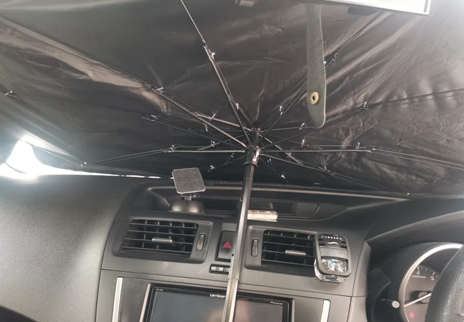
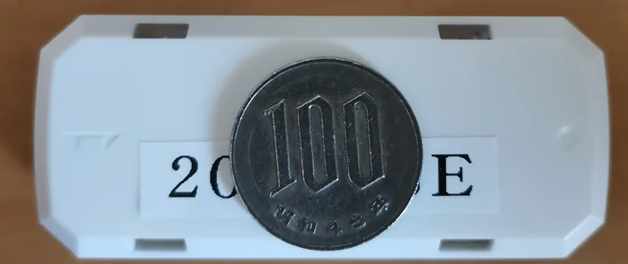
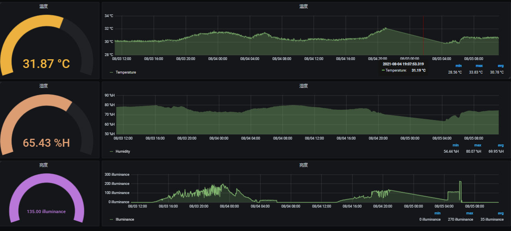

温度の急上昇検知
夏場の車内温度上昇を数値で継続的に把握できることを確認しました。
夏場の車内は温度が急激に上昇するため、ダッシュボード付近にセンサーを設置し、車内環境（温度・湿度・照度）を継続的に取得できるかを検証しました。
センサー単体は非常に小型で、目立たない場所への設置にも適しています。

車内ダッシュボードに設置したセンサー

100円硬貨とのサイズ比較
取得したデータをGrafanaでリアルタイムに可視化しました。実測では温度31.87℃、湿度65.43%H、照度135illuminanceといった値を記録し、日中の温度上昇・夜間の低下といった傾向も確認できました。

Grafanaで可視化した温度・湿度・照度データ
実際の検証の様子を動画でも紹介しています。
夏場の車内温度上昇を数値で継続的に把握できることを確認しました。
温度・湿度・照度を1台のセンサーで同時に取得できる点を確認しました。
現地に行かなくても、Grafanaの画面上で環境状態を確認できる構成を検証しました。
車内だけでなく、保管環境や栽培環境など、温湿度を知りたい場所への展開を想定しています。
子供やペットの車内放置による温度上昇を検知し、事故防止に役立てる活用を想定しています。
温湿度管理が必要な保管環境において、状態を継続的に把握する用途を想定しています。
ビニールハウス内の温湿度・照度管理など、栽培環境のモニタリングへの応用を検討できます。